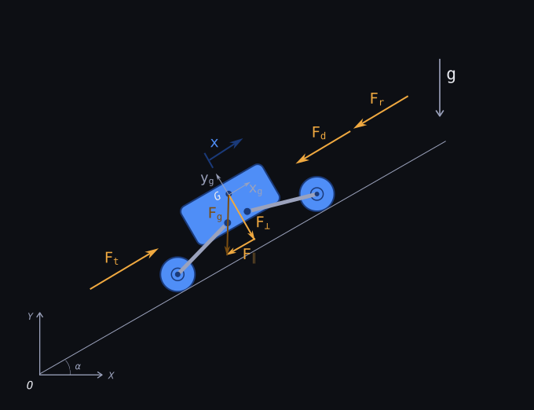
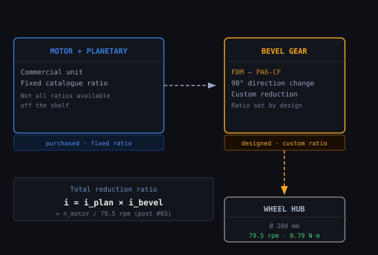

// mass budget
The total rover mass is the first number I need for the drivetrain calculation - and at this point I haven't weighed a single component. I started with a sub-system breakdown: four motors with gearbox at ~500 g each → 2 kg. Battery and electronics → 2 kg. Frame, wheels, fasteners → 3 kg. A 3 kg margin for cables, connectors, and the inevitable revision brings the total to 10 kg.
It's a first guess, not a measured value - consistent with similar open-source builds at this scale. A 10% overestimate in mass means a 10% overestimate in torque, which is an acceptable margin at this stage. I'll revise it once the BOM is more complete.
// design scenario
I sized the drivetrain around the worst case I could construct: slope at maximum angle, accelerating from rest, with full rolling resistance - all at the same time. The table collects the inputs.
| Parameter | Symbol | Value | Rationale |
|---|---|---|---|
| Total mass | m | 10 kg | mass budget estimate |
| Wheel radius | r | 100 mm | Ø200 mm - obstacle clearance |
| Rolling resistance coeff. | Crr | 0.10 | grass / gravel outdoor terrain |
| Max slope angle | α | 10° | typical outdoor terrain |
| Linear acceleration | a | 0.5 m/s² | moderate start from rest |
| Target max speed | v | 3 km/h | walking pace for outdoor inspection |
The 200 mm wheel diameter is larger than strictly necessary for the torque calculation. It's set by a geometric constraint: I need to clear obstacles up to ~80 mm high without grounding out the chassis. A larger wheel also reduces the required output shaft speed, which relaxes the gear ratio - a useful bonus.
// rolling resistance model
Rolling resistance on deformable terrain is well-studied. The Bekker model [1] gives a physics-based estimate by relating soil sinkage to normal load, using three parameters: kc (cohesive modulus), kφ (friction modulus), and n (sinkage exponent). In practice these require in-situ measurements and vary significantly with moisture content and vegetation density - neither of which I have data for the actual operating site.
So I used the empirical coefficient Crr = 0.10 instead. This matches the range in La Regina et al. [2] for wheeled robots on grass and gravel (Table 7), and it avoids terrain characterisation data I simply don't have. It's conservative compared to a smooth flat surface (Crr ≈ 0.02) but realistic for outdoor use.
// force budget
Three forces act along the direction of travel in the worst-case scenario. The figure shows the free-body diagram and the reference frames.

Fig. 1 - Forces acting on the rover on an inclined plane (worst-case scenario). Fr: rolling resistance. F‖: gravity component along the slope. Fa: inertia force during acceleration. G: centre of mass. Reference frame O-X-Y is fixed; xg-yg is aligned with the slope.
The three components, with g = 9.81 m/s²:
In practice the rover won't always accelerate at full rate on the steepest slope it will ever see. But combining all three is the right basis for motor sizing - it guarantees enough torque in every real situation, not just the average one.
// required torque and speed per wheel
Four driven wheels. I'm assuming equal load distribution - in practice, the slope and acceleration both shift weight toward the rear wheels, but the effect is small enough at this scale to ignore for sizing. Each wheel covers one quarter of the total force. The required torque at the hub follows directly:
Twheel = (Ftotal / 4) × r = (31.7 / 4) × 0.100 = 0.79 N·m per wheel
And the required wheel speed from the target linear speed of 3 km/h (0.833 m/s):
nwheel = v / (2π · r) × 60 = 0.833 / (2π × 0.100) × 60 = 79.5 rpm per wheel
These two numbers - 0.79 N·m and 79.5 rpm - are what the drivetrain has to deliver at the wheel hub. They're the input spec for motor selection.
Torque / wheel
0.79 N·m
slope + acceleration + rolling resistance
Speed / wheel
79.5 rpm
v = 3 km/h, r = 100 mm
// kinematic chain
With torque and speed defined, I need a transmission between the motor shaft and the wheel hub. The figure shows what I chose for Argo v1: a two-stage reduction, planetary then bevel.

Fig. 2 - Kinematic chain for Argo v1. Two stages: a commercial motor+planetary unit (fixed ratio, purchased) and a custom FDM bevel gear (custom ratio, 90° turn). Wheel hub output values (green) are fixed by this post. Intermediate shaft values depend on motor selection - post #03.
The bevel gear ratio is a design output, not a catalogue selection. Consumer-market planetary gearboxes come in a limited set of fixed ratios - I can't always find the exact reduction I need. The bevel stage fills that gap: it adds the remaining reduction and the 90° direction change the chassis geometry requires. The required total ratio is i = nmotor / 79.5 - it depends entirely on the motor selected, which is post #03. For motors in this class the realistic range is roughly 20:1 to 75:1: the planetary stage covers most of it, the bevel fills what's left. Tooth counts follow from there, constrained only by FDM process limits.
// margins and efficiency
The 0.79 N·m figure is the bare minimum at the wheel - no safety factor, no transmission losses. Three corrections bring it to a motor selection spec.
Transmission efficiency η = 0.65. Two gear stages: a consumer planetary gearbox and a custom bevel pair printed in PA6-CF. No measured data exists on FDM bevel mesh efficiency - 0.65 is a conservative estimate. A precision steel stage runs at ~0.97; printed gears on a manually assembled mesh add significant uncertainty. I'll revise this once I can measure it on the bench.
Continuous safety factor SF = 1.3. Applied to the straight-line worst case. Covers unmodelled load variations, terrain irregularities, and the fact that the mass budget is still an estimate.
Skid-steering peak factor SFpk = 3. Pivot-turning scrubs all four wheels laterally. The resistance torque depends on lateral friction and track geometry - I'm using 3× the straight-line requirement as a conservative estimate for grass and gravel. This is the dimensioning case for peak torque.
Tcont = Twheel × SF / η = 0.79 × 1.3 / 0.65 = 1.58 N·m per wheel
Tpeak = Twheel × SFpk / η = 0.79 × 3 / 0.65 = 3.65 N·m per wheel
These three numbers are the motor selection spec.
T cont / wheel
1.58 N·m
SF=1.3 · η=0.65
T peak / wheel
3.65 N·m
SFpk=3 · η=0.65
Speed / wheel
79.5 rpm
v = 3 km/h, r = 100 mm
The last number to close the motor spec is power. At the wheel hub in the continuous worst case:
Pwheel = Twheel × ω = 0.79 × 8.33 ≈ 6.6 W per wheel (nominal mechanical output at the hub)
Pmotor = Tcont × ωwheel = 1.58 × 8.33 ≈ 13 W per wheel — ~53 W total shaft power
The gear ratio cancels out: Pmotor = (Tcont / i) × (ωwheel × i) = Tcont × ωwheel. The 53 W figure already includes SF and transmission losses - it's what I'll use to filter the motor catalogue in the next post. Actual draw from the battery will be higher, divided by motor electrical efficiency (typically 0.7–0.9). Battery sizing comes later.
Motor and gearbox selection comes in the next post: T-ω curve, operating point, and thermal derating checked against 1.58 N·m continuous, 3.65 N·m peak, and ~53 W total shaft power.
// references
- Bekker, M.G. Introduction to Terrain-Vehicle Systems. University of Michigan Press, 1969.
- La Regina, R. et al. "Design and Experimental Validation of a Wheeled Mobile Robot for Outdoor Applications." Machines 13, 1071 (2025). doi:10.3390/machines13121071